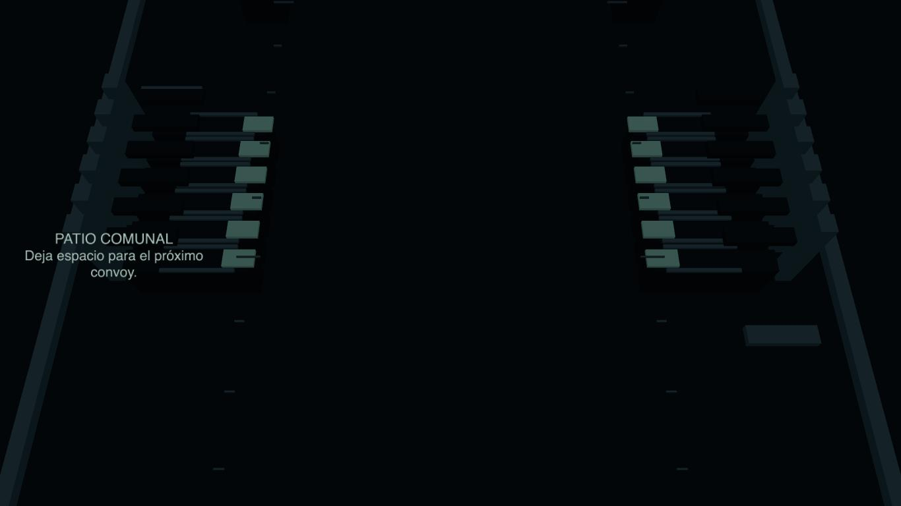
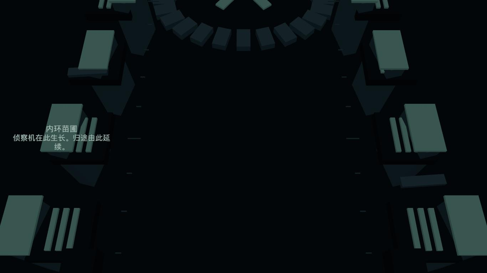
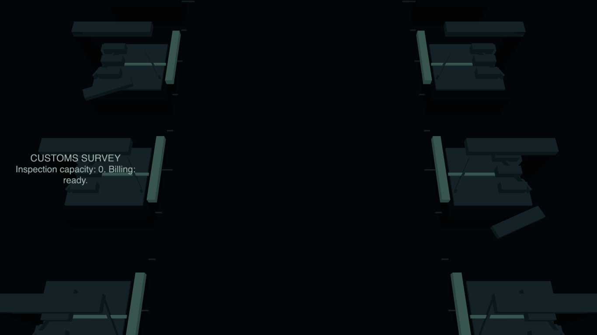
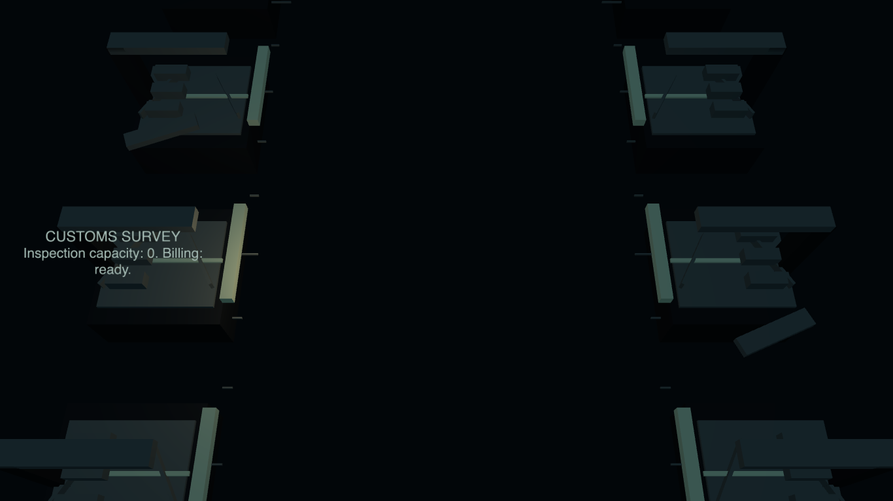

Procedural PBR environment pass, code 56b171d. Scope and limitations · Timings and AV checks · Provenance · Static QA
Not an all-green AV report: existing unvoiced commentary trips VO coverage. Four reels have nonsilent audio and zero page exceptions. Captured progression is about 52 ticks/second, not nominal 60. No hands-on or Chromebook claim.
Observe the place and activity before opening the authored explanation below. These are independent no-fire-autopilot excerpts, not frame-locked comparisons.
Source starts, timing samples and AV checks
Outer Drift: public route mast, civilian cargo silhouettes and restrained survey ruler. Lancer Gate: side-bay thresholds follow real pincer heights, freight moves outside the lane, closure hardware remains stowed. This is contextual staging, not an exact incoming-wave telegraph. The first seconds have lower population, later seconds more enemies and bullets. Generic repeating pylons are replaced rather than layered under the kit.
Not gameplay: deliberately combat-free fixture. Signs appear only in actual lulls, never as permanent columns. All fifteen authored discoveries are automatically archived through the stage API, even if no safe reading window occurs.


Same inspection hardware, same camera, synthetic nearby explosion light off/on. Not evidence of an actual recorded kill. Low tier and reduced flashing omit the transient light.


World: 97–140 instanced blocks, at most 7 scene draw calls (5 low). Measured world-update CPU means 0.008–0.010 ms on the development Mac, not GPU or school-device timings. Full limits and remaining failures are in the README.